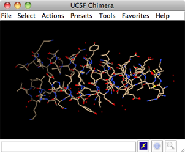
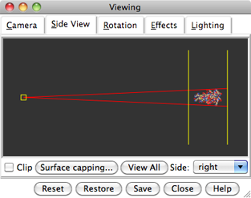
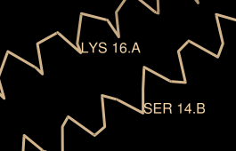
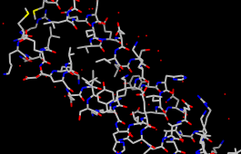
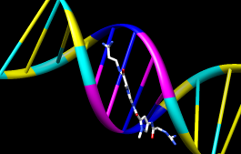
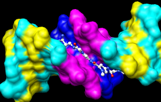
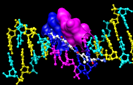

Many tasks in Chimera can be accomplished in multiple ways. For example, colors and display styles can be changed with the Actions menu or by entering commands. In general, commands are more concise and powerful, but menus allow easy access to features without knowledge of commands and their syntax.
In this tutorial, many of the same tasks performed with commands in the Getting Started Tutorial - Command Version are carried out using the menus instead.
To follow along, first download the PDB files included with this tutorial to a convenient location on your computer:
On Windows/Mac, click the chimera icon; on UNIX, start Chimera from the system prompt:
unix: chimeraA splash screen will appear, to be replaced in a few seconds by the main Chimera graphics window or Rapid Access interface (it does not matter which, the following instructions will work with either). If you like, resize the Chimera window by dragging its lower right corner.
|  |
A preset is a predefined combination of display settings. Apply interactive preset #2:
Presets... Interactive 2 (all atoms)
This displays all atoms and color-codes atoms other than carbon by element (oxygens red, nitrogens blue, etc.); carbons are left in the initial model color, in this case tan.
Try moving the structure with the mouse in the main graphics window. By default:
|  |
Use the Favorites menu to show the Side View for interactive scaling and clipping. It shows a tiny version of the structure. Within the Side View, try moving the eye position (the small square) and the clipping planes (vertical lines) with the left mouse button. The Side View will renormalize itself after movements, so that the eye or clipping plane positions may appear to “bounce back,” but your adjustments have been applied.
Continue moving and scaling the structure with the mouse in the graphics window and Side View as desired throughout the tutorial. When the mouse focus is in the graphics window (you may need to click into it if you have been interacting with a different window), hovering the mouse cursor over an atom or bond (without clicking any buttons) will show identifying information in a pop-up “balloon.” The balloon will disappear when the cursor is moved away.
In Chimera, selection specifies atoms, bonds, residues, etc. for subsequent operations with the Actions menu. Ways to make a selection include using the Select menu or picking from the screen. The Actions menu applies to whatever is selected, but when nothing is selected, the Actions menu applies to everything.
Select the water (red dots):
Select... Structure... solventAnother way to make the same selection is with Select... Residue... HOH. The selection is highlighted in green, and the magnifying glass icon near the bottom right of the window is also green: , indicating that something is selected. Hide the selected atoms:
Actions... Atoms/Bonds... hideEven though the water atoms are hidden, they are still selected. Clear the selection, thicken the lines, and display only the chain trace:
Select... Clear SelectionThe chain trace includes just the α-carbons (atoms named CA), connected in the same way that the residues are connected.
Actions... Atoms/Bonds... wire width... 3
Actions... Atoms/Bonds... backbone only... chain trace
By default, picking from the screen is done by clicking on the atom or bond of interest with the left mouse button while pressing the Ctrl key. To add to an existing selection, also press Shift. Try picking two atoms, one from each peptide chain (Ctrl-click the first, Shift-Ctrl-click the second).
Label the atoms you have selected, first by atom name and then by residue name and number:
| residue labels |
|---|
|  |
Actions... Label... nameThe specifier includes residue number and chain ID. One peptide is chain A and the other is chain B. Use the Favorites menu to show the Preferences, change to Category: Labels, and adjust the Label font and size as you wish. Click Save before closing the preferences if you want the settings to apply to later uses of Chimera.
Actions... Label... off
Actions... Label... residue... name + specifier
Clear the selection by Ctrl-clicking in empty space, as if picking “nothing.” Turn off the labels:
Actions... Label... residue... offColor the two chains different colors:
Select... Chain... ARepeat the process to color chain B yellow.
Actions... Color... cyan
Select chain A by picking any atom or bond in the chain, then pressing the up arrow key twice, once to expand the selection to the entire residue and another time to expand it to the entire chain. Display its full backbone:
Actions... Atoms/Bonds... backbone only... fullDisplay all atoms of chain A only (which is still selected):
Actions... Atoms/Bonds... show only
| coloring by element |
|---|
|  |
Display all atoms and color them by element:
Select... Clear SelectionThe by element coloring is the same as by heteroatom except it also color-codes carbons (gray). Heteroatom-only coloring is useful for keeping different structures distinguishable by their different carbon colors.
Actions... Atoms/Bonds... show
Actions... Color... by element
Generally, each file of coordinates opened in Chimera becomes a model with an associated model ID number. Models are assigned successive numbers starting with 0. Models are listed in the left side of the Model Panel (Tools... General Controls... Model Panel). A checkbox in the A(ctive) column of the Model Panel shows that the model is activated for motion; unchecking the box makes it impossible to move the model. Checking the box again restores the movable state. Make sure 1zik.pdb is highlighted on the left side of the Model Panel (if not, click on it) and then click close in the list of functions on the right side. Next, use the Close button at the bottom to dismiss the Model Panel.
Go on to Part 2 below, OR exit from Chimera with File... Quit.
With Chimera started as described at the beginning of Part 1, choose the menu item File... Open. Use the resulting file browser to locate and open the previously downloaded file 1d86.pdb. It contains the molecule netropsin bound to double-helical DNA.
Move and scale the structure with the mouse in the graphics window and Side View as desired throughout the tutorial.
Apply the “all atoms” preset, which will show the DNA as wire and netropsin as spheres:
Presets... Interactive 2 (all atoms)Color carbons white, then undisplay the water:
Select... Chemistry... element... CRemember that hiding atoms does not deselect them; they remain selected, as indicated by the green magnifying glass icon near the bottom right of the window, until the selection is cleared or replaced with a new selection.
Actions... Color... white Select... Structure... solvent
Actions... Atoms/Bonds... hide
|
Color the different nucleotides different colors. For example, color the adenine deoxynucleotides blue:
Select... Residue... DAAnalogously, color DC residues cyan, DG residues yellow, and DT residues magenta. Clear the selection with Select... Clear Selection or by picking (Ctrl-click) in empty space.
Actions... Color... blue
Next, try some different display styles, or representations.
Actions... Atoms/Bonds... sphere
Select... Chain... A
Actions... Atoms/Bonds... ball & stick
Select... Clear Selection
Actions... Atoms/Bonds... stick
|  |
Showing ribbon automatically hides the mainchain (backbone) atoms.
Actions... Ribbon... show
Actions... Ribbon... edged
Actions... Ribbon... rounded
DNA can be shown with special nucleotide objects. We will show “lollipops,” boxes, and a ladder.
Actions... Atoms/Bonds... nucleotide objects... settings...Nucleotide settings can be applied to just the selected residues (not necessarily all of the DNA). One way to select specific residues is in the Sequence tool:
In the resulting Nucleotides dialog:
- set Show side (sugar/base) as to tube/slab
- set Show base orientation to false
- click Slab Style tab, set slab style to skinny
- click Slab Options tab, set Slab object to ellipsoid
- click Apply; these are the “lollipops”
Favorites... SequenceShow the sequence of chain A and select one or a few residues in the sequence window with the mouse; this selects the corresponding part of the structure. Quit from the sequence window. In the Nucleotides dialog (also under Tools... Depiction in the menu):
Actions... Atoms/Bonds... nucleotide objects... offHide the ribbons and show everything as ball-and-stick:
Actions... Ribbon... hide
Actions... Atoms/Bonds... ball & stick
|  |
Finally, have some fun with surfaces. There are built-in categories within structures such as main and ligand; when nothing is selected, Actions... Surface... show displays the surface of main.
Actions... Surface... showSurface color can be specified separately from the colors of the underlying atoms. The ligand surface is tan and white because the original model color (tan) is used for surfaces of atoms not explicitly recolored by the user, and above, only the carbon atoms were changed to white. With the ligand still selected, choose Actions... Color... all options... to open the Color Actions dialog. In that dialog,
Actions... Surface... hide
Select... Structure... ligand
Actions... Surface... show
Actions... Surface... mesh
Select... Clear Selection
Actions... Surface... solid
Actions... Surface... hide
|  |
To prepare for any subsequent operations, restore the selection mode and clear the selection:
- change the selection mode: Select... Selection Mode... append
- Select... Residue... DA
- Select... Residue... DT
- change the selection mode: Select... Selection Mode... intersect
- Select... Chain... B
- Actions... Surface... show
Select... Selection Mode... replaceThe command equivalent is much more concise, but requires some knowledge of the atom specification syntax:
Select... Clear Selection (or Ctrl-click in empty space)
Command: surf :da.b,dt.b
Sometimes it is helpful to make a surface transparent:
Actions... Surface... transparency... 50%Choose File... Quit from the menu to terminate the Chimera session.